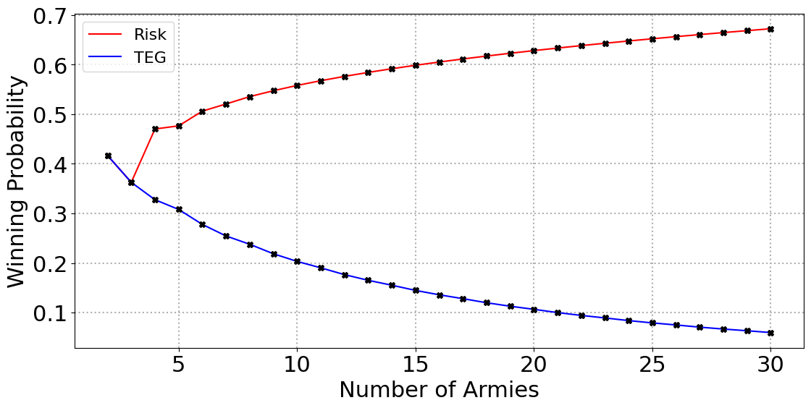

This project extends the analytical results from the RISK combat models developed by Blatt & Sharon3 and Osborne2 to the Argentine strategy game TEG. Using Markov chains, it computes the probability of conquering a territory after a sequence of attacks. Este proyecto extiende los resultados analíticos de los modelos de combate del RISK desarrollados por Blatt & Sharon3 y Osborne2 al juego de estrategia argentino TEG. Usando cadenas de Markov, calcula la probabilidad de conquistar un territorio tras sucesivos ataques.
Although TEG closely resembles RISK, there is one key structural difference: in TEG the defender can roll up to three dice, while in RISK the defender is limited to two. This seemingly minor rule change drastically shifts the balance of the game: as the number of armies grows, the defender's advantage in TEG becomes far greater than in RISK. We'll see why this is the case in detail below. Aunque el TEG se parece mucho al RISK, hay una diferencia estructural clave: en el TEG el defensor puede tirar hasta tres dados, mientras que en el RISK el defensor está limitado a dos. Este pequeño cambio en la regla desplaza drásticamente el equilibrio del juego: a medida que crecen los ejércitos, la ventaja del defensor en el TEG se vuelve mucho mayor que en el RISK.
Enter the number of attacking and defending armies to see the exact probability of conquest and the distribution of army losses after the full sequence of battles. Toggle between attacker and defender to switch the distribution shown in the chart. Ingresá la cantidad de ejércitos atacantes y defensores para ver la probabilidad exacta de conquista y la distribución de pérdidas de ejércitos tras la secuencia completa de batallas. Cambiá el toggle para ver la distribución del atacante o del defensor.
Each round of combat, both attacker and defender roll a number of dice determined by how many armies they have. After rolling, both sides sort their dice in descending order and compare them pair by pair: the attacker's highest vs the defender's highest, second-highest vs second-highest, and so on. The attacker loses one army for each pair in which their die is less than or equal to the defender's die.
The simplest situation, one attacking die vs one defending die, is easy to visualize geometrically.
Lay out all 36 equally-likely outcomes on a 6×6 grid, with the attacker's result on one axis and the defender's on the other. The attacker wins whenever their die is strictly greater than the defender's (that is, all cells below the main diagonal). The diagonal itself (draws) goes to the defender. Counting:
Counting the cases where the defender wins (on or above the diagonal) gives a triangle: summing from top to bottom, 1+2+3+4+5+6 out of 36 total. Following the notation of Osborne,2 \(\pi_{ADG}\) denotes the probability of gaining \(G\) armies when attacking with \(A\) dice and defending against \(D\) dice: Contando los casos donde gana el defensor (sobre la diagonal o por encima) se obtiene un triángulo: sumando de arriba hacia abajo, 1+2+3+4+5+6 de 36 totales. Siguiendo la notación de Osborne,2 \(\pi_{ADG}\) denota la probabilidad de ganar \(G\) ejércitos atacando con \(A\) dados y defendiendo con \(D\) dados:
\[ \pi_{110} = \frac{1+2+3+4+5+6}{6^2} = \frac{7}{12} = 58{,}33\% \qquad \pi_{111} = 1 - \pi_{110} = \frac{5}{12} = 41{,}67\% \]
Picture a cube where one edge is the defender's die and the other two edges from the same vertex are the attacker's two dice. If before the losing probability was given by a triangle, now it is given by a square pyramid. The total number of cases is 6³, and summing the losing outcomes gives 1²+2²+3²+4²+5²+6² (because now, we are summing up squares of increasing size): Se puede armar un cubo donde una arista sea el dado del defensor y las otras dos aristas desde el mismo vértice sean los dos dados del atacante. Si antes la probabilidad de perder estaba dada por un triángulo, ahora está dada por una pirámide de base cuadrada. La cantidad total de casos es 6³ y la suma de los casos perdidos da 1²+2²+3²+4²+5²+6² (porque ahora, estamos sumando cuadrados de tamaño creciente):
\[ \pi_{210} = \frac{1^2+2^2+3^2+4^2+5^2+6^2}{6^3} = \frac{91}{216} = 42{,}13\% \qquad \pi_{211} = 1 - \pi_{210} = \frac{125}{216} = 57{,}87\% \]
Closing our eyes and trusting the god of the four-dimensional pyramid and the tesseract, we can generalise to three attacking dice. The total cases grow to 6⁴ and the losing count becomes 1³+2³+3³+4³+5³+6³: Cerrando bien fuerte los ojos y confiando en el dios de la pirámide tetradimensional y el teseracto, podemos generalizar a tres dados atacantes. Los casos totales crecen a 6⁴ y los casos perdidos suman 1³+2³+3³+4³+5³+6³:
\[ \pi_{310} = \frac{1^3+2^3+3^3+4^3+5^3+6^3}{6^4} = \frac{49}{144} = 34{,}03\% \qquad \pi_{311} = 1 - \pi_{310} = \frac{95}{144} = 65{,}97\% \]
All three cases above involve only a single comparison (the highest die on each side), so the geometric counting is straightforward. Things get harder as soon as we need to compare two pairs simultaneously. Los tres casos anteriores implican una sola comparación (el dado más alto de cada lado), por lo que el conteo geométrico es directo. Las cosas se complican en cuanto hay que comparar dos pares simultáneamente.
The geometric pattern in the single-comparison cases generalises cleanly to dice with N sides. For 1v1 the formula extends to: El patrón geométrico de los casos de comparación simple se generaliza limpiamente a dados de N caras. Para 1vs1 la fórmula se extiende a:
\[ \pi_{110}^{N} = \frac{\sum_{n=1}^N n}{N^2} = \frac{N(N+1)}{2N^2} = \frac{1}{2} + \frac{1}{2N} \xrightarrow{N\to\infty} \frac{1}{2} \]
For 2v1 and 3v1 the sums of squares and cubes give: Para 2vs1 y 3vs1, las sumas de cuadrados y cubos dan:
\[ \pi_{210}^{N} = \frac{\sum_{n=1}^N n^2}{N^3} = \frac{N(N+1)(2N+1)}{6N^3} \xrightarrow{N\to\infty} \frac{1}{3} \]
\[ \pi_{310}^{N} = \frac{\sum_{n=1}^N n^3}{N^4} = \frac{N^2(N+1)^2}{4N^4} \xrightarrow{N\to\infty} \frac{1}{4} \]
In general (without proof), the defender-wins probability for A vs 1 dice tends to \(1/(A+1)\) as \(N \to \infty\). In particular, the winning probabilities \(\pi_{A11}^\infty\) are all greater than \(\pi_{A11}\), so the attacker would always benefit from dice with as many faces as possible (as also noted by Osborne).2 En general (sin demostración), la probabilidad de que gane el defensor en Avs1 tiende a \(1/(A+1)\) cuando \(N \to \infty\). En particular, las probabilidades de ganar \(\pi_{A11}^\infty\) son todas mayores a \(\pi_{A11}\), con lo que al atacante siempre le convendría atacar con dados de la mayor cantidad de caras posibles (como también señala Osborne).2
In the 2v1 case one might think that the probability of two dice beating one is simply the probability that the first attacking die beats the defender's plus the probability that the second does. But, as Blatt3 emphasises (and as Tan1 incorrectly proposes), this is not so. Winning with the first die is not independent of winning with the second, because the outcome of the first roll changes the probability distribution of the other. For example, if the first attacking die wins, the defender's die can no longer have been a six (no attacking die could have beaten it) so the second attacking die's chances are automatically higher. En el caso 2vs1, se podría pensar que la probabilidad de que dos dados sean mayores a uno es la probabilidad de que el primer dado atacante sea mayor al defensor más la probabilidad de que lo sea el segundo. Pero, como hace hincapié Blatt3 (y como erróneamente propone Tan1), esto no es así. Ganar con el primer dado no es un evento independiente de ganar con el segundo, porque el resultado del primer dado cambia la distribución de probabilidad del defensor. Por ejemplo, si el primer dado atacante gana, es imposible que el defensor haya sacado un seis —ningún dado le habría podido ganar— y el segundo dado atacante ya tiene más chances automáticamente.
This seems paradoxical. What does the second die care whether the first won or not? And yet it does: knowing the first die won tells you something about what the defender must have rolled, and that changes the probabilities for the second comparison. The events are not independent. Esto parece paradójico. ¿Qué le importa al segundo dado si el primero ganó o no? Y sin embargo sí le importa: saber que el primer dado ganó dice algo sobre lo que habrá sacado el defensor, y eso cambia las probabilidades para la segunda comparación. Los eventos no son independientes.
This matters most in the 3v2 case, where two comparisons happen simultaneously. Tan1 multiplies marginal probabilities; Osborne2 works with the correct joint distribution of the sorted dice. The difference is not negligible: Esto importa especialmente en el caso 3vs2 (Caso VI en la literatura), donde hay dos comparaciones simultáneas. Tan1 multiplica probabilidades marginales; Osborne2 trabaja con la distribución conjunta correcta de los dados ordenados. La diferencia no es despreciable:
| Outcome | Tan (independent) | Correct (joint) |
|---|---|---|
| Defender loses 2 | 0.259 | 0.372 |
| Each loses 1 | 0.504 | 0.336 |
| Attacker loses 2 | 0.237 | 0.293 |
Because these transition probabilities are the building blocks of the entire Markov chain, even a small per-roll bias compounds dramatically over the many rounds of a full campaign.
The key insight is to separate all possible rolls into scenarios: groups of outcomes that share the same ordering pattern. For example, one scenario for a 3v3 roll is \(Y_1 = Y_2 = Y_3,\, Z_1 = Z_2 = Z_3\) (all attacking dice equal, all defending dice equal). Another is \(Y_1 = Y_2 > Y_3,\, Z_1 = Z_2 = Z_3\). And so on. Each scenario groups all the realizations where the dice obey that same set of equalities and inequalities. La idea clave es separar todos los resultados posibles en escenarios — grupos de resultados que comparten el mismo patrón de orden. Por ejemplo, un escenario para un tiro 3vs3 es \(Y_1 = Y_2 = Y_3,\, Z_1 = Z_2 = Z_3\) (todos los dados atacantes iguales, todos los defensores iguales). Otro es \(Y_1 = Y_2 > Y_3,\, Z_1 = Z_2 = Z_3\). Y así sucesivamente. Cada escenario agrupa todas las realizaciones donde los dados satisfacen ese mismo conjunto de igualdades y desigualdades.
Within a scenario, every realization has the same probability. For instance, the event \(Y_1 = Y_2 = Y_3\) has probability \(1/6^3\) (all three dice show the same face, chosen freely). The event \(Y_1 = Y_2 > Y_3\) has probability \(3/6^3\) (there are three permutations of two equal dice and one smaller). Since attacker and defender rolls are independent, the probability of a joint scenario like \(Y_1 = Y_2 > Y_3,\, Z_1 > Z_2 > Z_3\) is just \(\frac{3}{6^3} \cdot \frac{6}{6^3}\). Dentro de un escenario, todas las realizaciones tienen la misma probabilidad. Por ejemplo, el evento \(Y_1 = Y_2 = Y_3\) tiene probabilidad \(1/6^3\) (los tres dados muestran la misma cara, elegida libremente). El evento \(Y_1 = Y_2 > Y_3\) tiene probabilidad \(3/6^3\) — hay tres permutaciones de dos dados iguales y uno menor. Como los tiros del atacante y el defensor son independientes, la probabilidad de un escenario conjunto como \(Y_1 = Y_2 > Y_3,\, Z_1 > Z_2 > Z_3\) es simplemente \(\frac{3}{6^3} \cdot \frac{6}{6^3}\).
For each scenario we then enumerate every realization and count how many result in the attacker winning 0, 1, 2, or 3 armies, contributing to \(\pi_{AD0}, \pi_{AD1}, \pi_{AD2}, \pi_{AD3}\) respectively. Multiplying each count by the scenario's probability and summing over all scenarios gives the exact final probabilities. For example, consider the 3v3 scenario \(Y_1 = Y_2 = Y_3,\, Z_1 = Z_2 = Z_3\): since all attacking dice are equal to each other and the same holds for the defending dice, the attacker either wins all three comparisons or loses all three. Enumerating gives 15 realizations contributing to \(\pi_{333}\) and 21 contributing to \(\pi_{330}\), with no contribution to \(\pi_{331}\) or \(\pi_{332}\). Para cada escenario enumeramos todas las realizaciones y contamos cuántas resultan en que el atacante gana 0, 1, 2 o 3 ejércitos — contribuyendo a \(\pi_{AD0}, \pi_{AD1}, \pi_{AD2}, \pi_{AD3}\) respectivamente. Multiplicando cada conteo por la probabilidad del escenario y sumando sobre todos los escenarios se obtienen las probabilidades exactas finales. Por ejemplo, el escenario 3vs3 \(Y_1 = Y_2 = Y_3,\, Z_1 = Z_2 = Z_3\): como todos los dados atacantes son iguales entre sí y lo mismo vale para los defensores, el atacante o gana las tres comparaciones o las pierde todas. La enumeración da 15 realizaciones que contribuyen a \(\pi_{333}\) y 21 a \(\pi_{330}\), sin contribución a \(\pi_{331}\) ni \(\pi_{332}\).
Applying this procedure to every case, 1v1 through 3v3, yields the complete table of single-round probabilities that feeds the Markov chain. The two cases that require it (and that do not appear in any of the original RISK papers, since in RISK the defender is limited to two dice) are 3v3 and 2v3. Aplicar este procedimiento a todos los casos — de 1vs1 a 3vs3 — produce la tabla completa de probabilidades por ronda que alimenta la cadena de Markov. Los dos casos que lo requieren — y que no aparecen en ninguno de los artículos originales sobre el RISK, ya que en ese juego el defensor está limitado a dos dados — son el 3vs3 y el 2vs3.
This is the most common combat situation in TEG: both sides roll three dice and compare them pair by pair, highest against highest, second against second, third against third. There are 6⁶ = 46 656 total outcomes, grouped into 16 ordering scenarios (4 patterns for the attacker's three dice × 4 for the defender's). The result: Esta es la situación de combate más común en el TEG: ambos lados tiran tres dados y los comparan de a pares, el mayor contra el mayor, el segundo contra el segundo, el tercero contra el tercero. Hay 6⁶ = 46 656 resultados totales, agrupados en 16 escenarios de orden (4 patrones para los tres dados del atacante × 4 para el defensor). El resultado:
| ProbabilityProbabilidad | OutcomeResultado | ValueValor |
|---|---|---|
| \(\pi_{333}\) | attacker wins 3atacante gana 3 | 13.76% |
| \(\pi_{332}\) | attacker wins 2, loses 1atacante gana 2, pierde 1 | 21.47% |
| \(\pi_{331}\) | attacker wins 1, loses 2atacante gana 1, pierde 2 | 26.47% |
| \(\pi_{330}\) | attacker loses 3atacante pierde 3 | 38.30% |
The defender's extra die compared to RISK makes itself felt immediately: in the standard 3v2 RISK case the attacker wins two armies with probability 37.2%; here, even with a matching third die, the attacker wins all three only 13.8% of the time. El dado extra del defensor respecto al RISK se siente de inmediato: en el caso estándar 3vs2 del RISK el atacante gana dos ejércitos con probabilidad del 37,2%; aquí, incluso con un tercer dado equivalente, el atacante gana los tres sólo el 13,8% de las veces.
When the attacker has only two dice and the defender three, only two comparisons take place: the attacker's highest die against the defender's highest, and the attacker's second die against the defender's second. There are 6⁵ = 7 776 total outcomes grouped into 8 ordering scenarios (2 patterns for the attacker × 4 for the defender). The enumeration gives: Cuando el atacante tiene solo dos dados y el defensor tres, solo tienen lugar dos comparaciones: el dado más alto del atacante contra el del defensor, y el segundo del atacante contra el segundo del defensor. Hay 6⁵ = 7 776 resultados totales agrupados en 8 escenarios de orden (2 patrones para el atacante × 4 para el defensor). La enumeración da:
| ProbabilityProbabilidad | OutcomeResultado | ValueValor |
|---|---|---|
| \(\pi_{232}\) | attacker wins 2atacante gana 2 | 12.59% |
| \(\pi_{231}\) | each loses 1cada uno pierde 1 | 25.48% |
| \(\pi_{230}\) | attacker loses 2atacante pierde 2 | 61.93% |
Applying the pipeline described in the papers, for both RISK (defender rolls ≤2 dice) and TEG (defender rolls ≤3 dice) produces striking results. Figure 1 shows the probability of victory for equal-sized armies as a function of army count in each game.

The contrast is stark. In RISK, larger engagements tend to favour the attacker (an intuition consistent with Osborne's2 recommendation to "be more aggressive"). In TEG, the opposite holds: the defender's third die provides an advantage that compounds over many rounds, making large-scale attacks a poor proposition unless the attacker has a significant numerical edge.